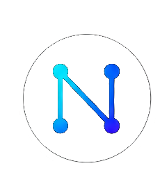
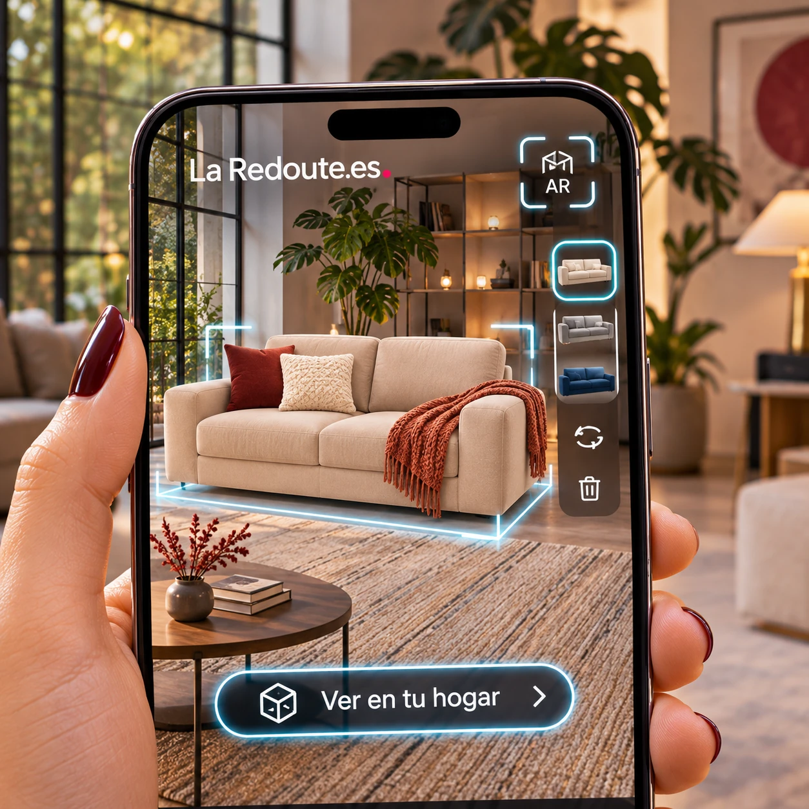
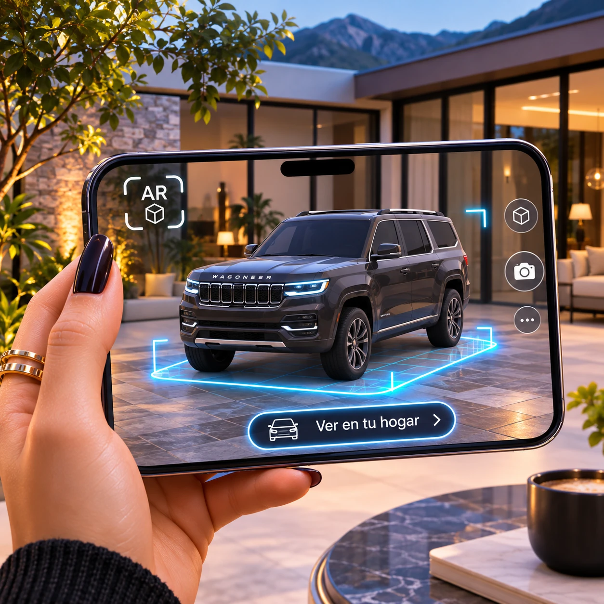
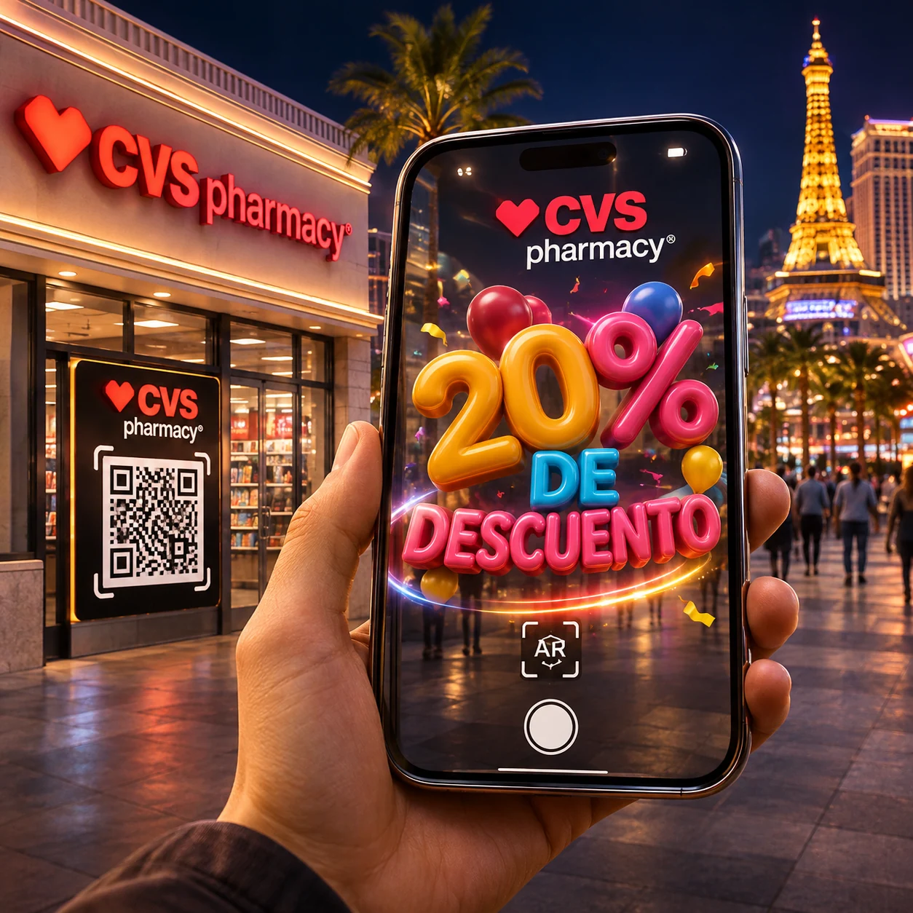
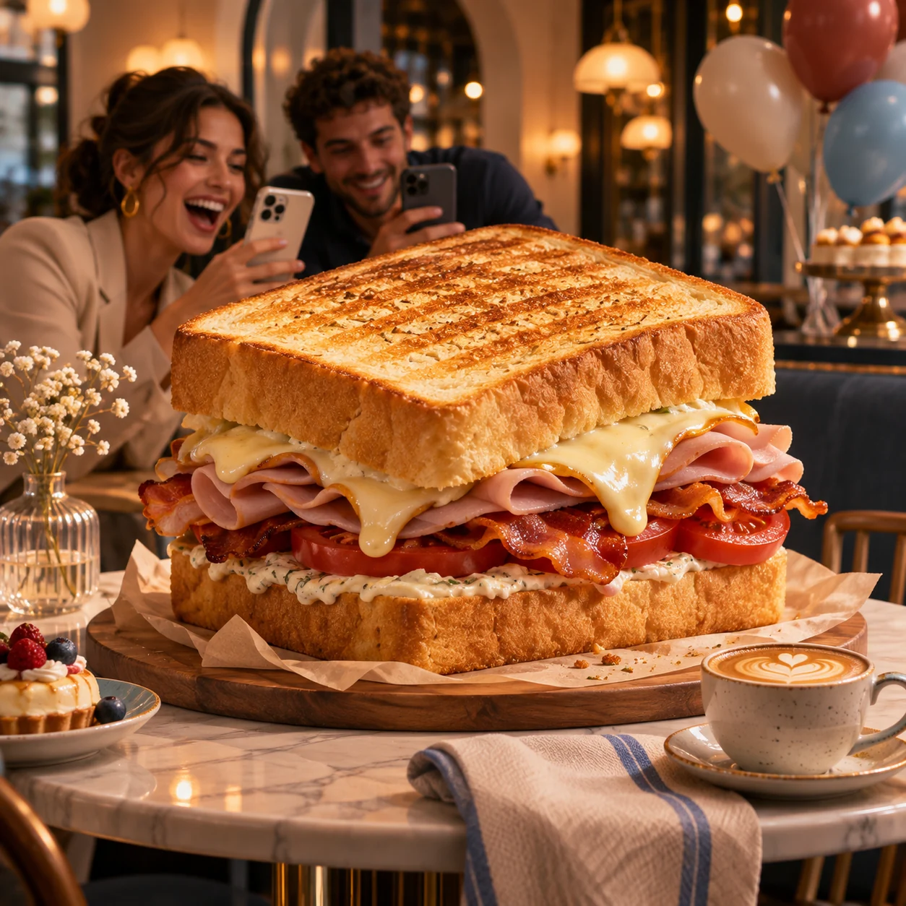
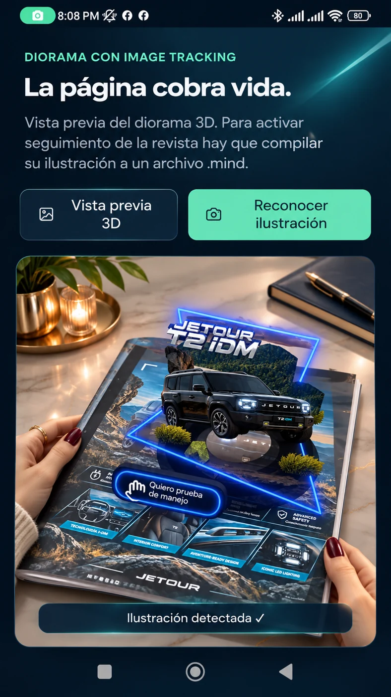
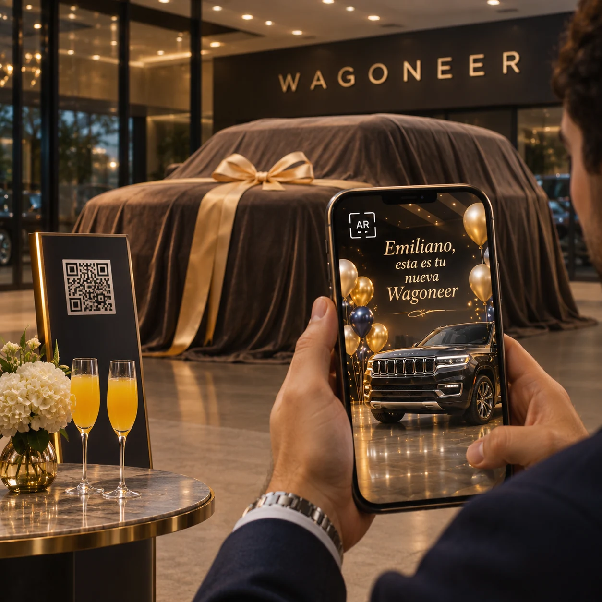
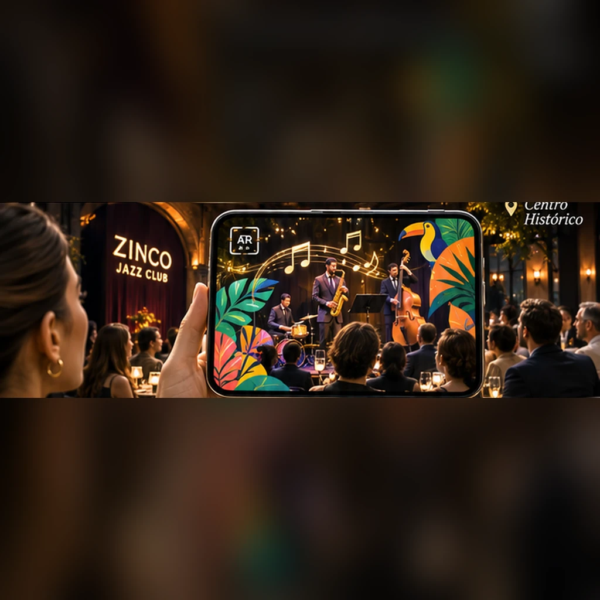

WebAR & dioramas
Transforma una página, un empaque o un display en una escena tridimensional interactiva.
Image tracking / 3D
NEUROFITEXPERIENCE STUDIODiseñamos experiencias que conectan el mundo físico con el digital. Realidad aumentada, storytelling y contenido hecho para descubrir, explorar y compartir.
01 / UNA NUEVA FORMA DE CONECTAR
Hoy las marcas compiten por algo mucho más valioso que la atención: la posibilidad de convertirse en una experiencia memorable.
En Neurofit, junto con nuestros aliados creativos, transformamos publicaciones, tiendas, eventos y entregas de producto en momentos interactivos que las personas quieren compartir.
02 / LO QUE HACEMOS
Plataformas y contenidos a la medida de cada campaña. No vendemos software empaquetado: conceptualizamos, producimos y operamos experiencias.
Transforma una página, un empaque o un display en una escena tridimensional interactiva.
Image tracking / 3DVisualiza una SUV, un sofá o un objeto a escala en el hogar, oficina o jardín del usuario.
AR en espacio realExperiencias para puntos de venta, lanzamientos y displays con recorridos medibles.
Online / OfflineVideos verticales, UGC, assets 3D y embajadores virtuales para campañas conectadas.
Reels / Shorts / UGC03 / EXPERIENCIAS EN CONTEXTO
Ejemplos creativos de cómo una activación QR puede transformar cualquier punto de contacto. Imágenes ilustrativas, sujetas a validación de cada marca.

Muebles y decoración a escala real en el espacio del usuario.

Coloca una camioneta virtual a escala real en tu cochera o patio.

Un descuento virtual del 20% para fotografiar y compartir. Demo no canjeable.

Una imagen AR sorprendente para publicar y desbloquear un café, según la promoción.

Un diorama que emerge del papel y un vehículo virtual en tu piso.

Un mensaje AR da paso al reveal de un auto nuevo en agencia.

Notas y arte gráfico del álbum flotan sobre un escenario íntimo.
Los ejemplos visuales son demostraciones creativas. Marcas, promociones, colaboraciones y derechos de uso requieren validación y autorización; ningún código de descuento mostrado es válido en caja.
04 / UNA PLATAFORMA, MÚLTIPLES FORMAS
Un QR puede abrir un universo. Desde la revista hasta la tienda, desde el concierto hasta la entrega de un vehículo.
Hablemos por WhatsApp05 / CÓMO LO HACEMOS
Contexto, audiencia, marca y objetivos de comunicación.
Narrativa, guion, investigación y diseño de interacciones.
Assets 3D, WebAR, micrositios, QR, NFC, videos y contenido social.
Implementación, pruebas de compatibilidad, soporte y medición.
06 / HABLEMOS
Cuéntanos qué quieres comunicar. Nosotros imaginamos cómo convertirlo en algo que las personas quieran vivir.
Hablemos por WhatsApp